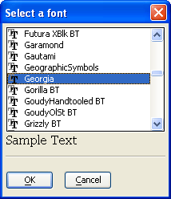

{FONTLIST}
Syntax
{FONTLIST= Width, Height : Default_Font }
|
Argument |
Type |
Description |
|
Width |
N |
The width of the control in characters, by default based on the default font: Arial 8. |
|
Height |
N |
The height of the control in lines, by default based on the default font: Arial 8. |
|
Default_Font |
P |
The variable that receives the user font selection. It has 3 components.
|
Description
The {FONTLIST} command displays a list of installed fonts.
Limitations
Desktop applications only
Example
|
dim pfont as p pfont.facename = "Arial" pfont.size = 12 pfont.allow_raster_expr = ".t." ui_dlg_box("Font List",<<%dlg% {fontlist=40,10:pfont}; {samplefont=40,2:pfont}; {line=1,0}; {lf}; <*10&OK!ok> <10&Cancel!cancel>; %dlg% ) |

See Also